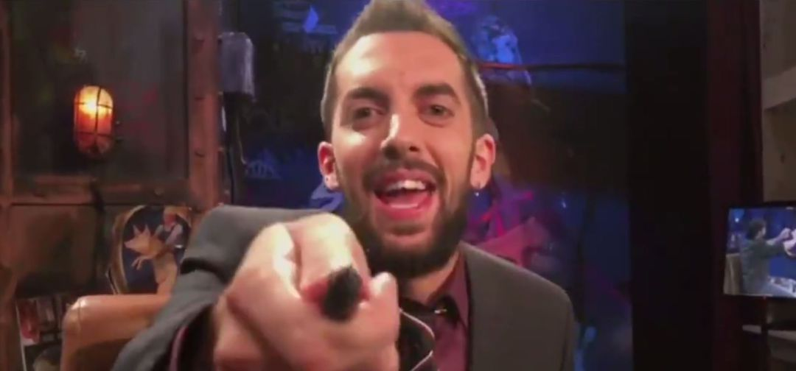

|  |
|
|---|
Estudios de Informática y Publicidad en la Universidad Complutense de Madrid, y algunas asignaturas de Física.
| TELEVISION | ||
|---|---|---|
| Año | Programa | Cadena |
| 2008-2009 | Nuevos Cómicos | Paramount Comedy |
| 2008-2009 | Estas no son las noticias | Cuatro |
| Desde 2009 | Ilustres Ignorantes | Canal + |
| 2016-2018 | Late Motiv | Movistar #0 |
| 2016-2017 | Loco Mundo | Movistar #0 |
| Desde 2018 | La Resistencia | Movistar #0 |
| 2019 | Capitulo 0 | Movistar #0 |
| RADIO | ||
|---|---|---|
| Año | Programa | Cadena |
| 2008 | No somos nadie | M80 |
| 2011 | Hoy por hoy | Cadena SER |
| 2013-2015 | YU:no te pierdas nada | Los 40 |
| 2015-2016 | Anda Ya | Los 40 |
| 2019 | Comedia Perpetua | Cadena SER |
| Desde 2012 | A vivir que son dos dias | Cadena SER |
| Desde 2014 | La vida moderna | Cadena SER |
Premio Ondas por A Vivir Que Son Dos Días, Cadena SER (2015).
Premio Cómico del Año del Festival de Televisión de Vitoria (2017).
Premio Jaén Paraíso Interior (2017).
Nominado a Mejor Presentador en los Premios Iris de la Academia de Televisión (2018).
Premio Ondas por La vida moderna, Cadena SER (2018).
Premio Ondas por La Resistencia, 0# Movistar (2019).
Premio Festival de Televisión de Vitoria por La Resistencia (2019).
Desde 2016 ha girado por España con el show de La vida moderna, que en 2019 acumuló las actuaciones de comedia más masivas realizadas en España, finalizando la gira en el Palacio de los Deportes de Madrid ante 8.000 personas.